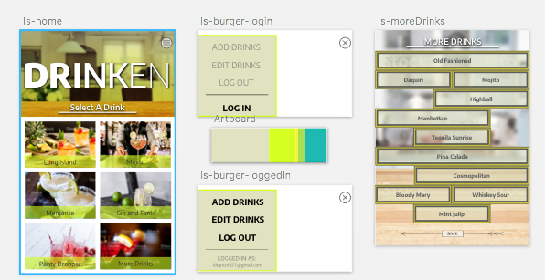
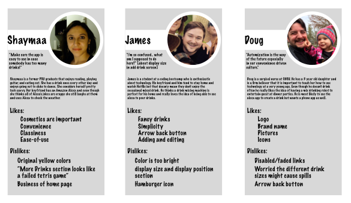

I am a web developer, web designer, and full-time geek. I enjoy making websites, working with data, and all things soccer. I recently graduated from Epicodus, a coding bootcamp in Portland, OR and I am currently enrolled in a data science course online through Thinkful. I am currently seeking job opportunities in Portland, OR. and Atlanta, GA.
Contact
I am currently seeking job opportunities in
Portland, OR. and Atlanta, GA.
Send me an email
Projects
←
→
P.O.L.L.I.
The robotic arm that you can control with hand motion or through a mobile-friendly website.
P.O.L.L.I. was created over the span of 6 days at Epicodus. Isabella Abatgis and I paired with John Dowd and Pete Lazuran from the C# cohort to create something that had never been done at Epicodus before. A robotic arm that mimics your hand motion and saves a log of it's movements to a database for data analytics.
The first two days of the project were spent physically building the robot as a team and doing research. We made a document that outlined the project plan and formally proposed the idea to the instructor for approval. Once the arm was constructed I began setting up a MEAN stack application and running tests to communicate with an LED from the web browser. By the weekend I was able to control the LED but was unable to successfully communicate with the robots board through the arduino.
The following Monday we had a breakthrough when we removed the robotic arms board and connected the servo motors directly to the arduino board. Unfortunately, the breakthrough was only working on a simple test server we had setup without the MEAN stack and due to the short timeframe we abandoned the MEAN stack repository. I knew I was close to getting everything to work which later motivated me to make a drink mixing robot.
From that point forward, I focused my attention on working with Isabella to design to build the interface while John and Pete worked on logging the movements and connecting the input fields to the Johnny-Five methods.
Connect to this robotic bartender on your phone and select a drink from a menu and select the size you want. Drinken will pour it. You are also able to create, remove, update, and delete drink recipes from the beautiful user-friendly interface. The site is only hosted locally on my Raspberry Pi 3 so I have a link to the invision prototype instead.
Drinken was my capstone project for Epicodus and I presented it at my class' demo day. I was inspired to make this drink mixing robot because I had learned a large deal about Arduino boards and Johnny-Five(javascript robotics library) while working on the P.O.L.L.I. robotic arm project and wanted to extend that knowledge. I wanted to use the MEAN stack because I was never able to fully implement it into the robotic arm project and I had the knowledge to make it work.
Design Choices
Drinken is dutch for "drink". I got the idea for the name from Keurig which is dutch for "neat". I drew a lot of inspiration from Keurig because they could both be considered kitchen appliances that are novelties. I originally designed the branding to be high energy and pop out at you with a kitchen esque vibe.

But after getting feedback I did a complete 180 and changed the tone to more a regal feel. The final product uses maroonish red and earthy tones to make sense of elegance and novelty. I redesigned the drink options layout because it was too "tetrisy" and confusing.

Process
I came across the idea while looking up arduino projects people had done and saw a lot of different variations of this project. Every project was using peristaltic pumps in one way or another but the most impressive overall structure I found was from
Yu Jiang Tham who not only 3d printed his structure but also provided .STL files for the structure to be used as open source. I didn't know anything about 3d printing so I asked around and heard about a free intro to 3d modeling class at the local library. I attended the very next class and three hours later I was ready to print my first piece on the library's 3d printer. It was the smallest piece and in an hour and 20 minutes later I had one out of 19 pieces. Unfortunately, this wasn't going to work because the printer was high in demand and my Cura 3d printing software was informing me I had over 40 hours of total print time. I called the single piece a success and outsourced the rest of the printing.
This project ended up being way more challenging than I anticipated because the combination of hardware and using unfamiliar technologies made troubleshooting extremely difficult. At one point I spent an hour trying to figure out why my code wasn't pouring the drinks only to discover I accidentally unplugged the power. In the end, I presented this project at a demo day event and I had learned so much over the process that I was confident in my ability to troubleshoot any problems if they would have occurred.
Need a doctor? Enter a symptom and and address to find up to 20 doctors nearby. Receive contact information, a brief description, and a list of their specialties.
Find a doctor was an independent project created over one weekend. This was an assignment during the JavaScript course at Epicodus to test our knowledge of working with api's. The bonus prompt for the assignment was to create a "friendly" site.
Design Choices
In the pursuit of making my site "friendly" I researched color theory for different "friendly" colors and compared those colors to different doctor related websites. I found an overwhelming use of the color blue in medical sites which was perfect because blue gives a calming, relaxed feeling. My favorite part of the web page is the splash page. I found a wonderful, relaxing doctor image from unsplash.com and make a relatable tagline of "need a doctor?".
The call to action button originally said "find a doctor now". I added the two arrows after asking my roommate to take a look at the site, I noticed he paused for a bit and had to think because he wasn't sure where to go from the landing page.
Process
The requirements to pass the test were to simply append information from the better doctor api onto the page. However, the better doctor api uses latitude and longitude in the api call and I have never seen a website ask for my lat and lon instead of an address so that wasn't going to pass my standards. It wasn't long until I found the google maps api for geolocation and added that to solve the problem.
The most challenging part of the code for me was making all the doctors appear as though they were in one module. At the time I was unfamiliar with the concept of javascript wireframes and making module templates with dynamic information so I had to get a bit creative. I appended all the information into individual components and relatively positioned them on top of eachother. Then created a JavaScript function to compare the clicked list item with all the h1's on the page and if the inner HTML matched I displayed that headers parent and hid all of that parent's siblings.
I was frustrated with all the extra features color pallette sites have so I created ⑇simpleClor. The idea is to make it as simple as possible to enter a color and get back hex codes of the related colors you want.
Process
I began ⑇simpleColor during the "bring your own project night" at the monthly front-end PDX meetup I attend. At the time, the only project I was working on was for my internship at ScoutSavvy and I wanted to work on something new. I kept everything to one font, vanilla css, and no javascript framework to keep with the theme of a simple website.
The original idea was to do the calculations on converting a hex code into different color combinations but during research I discovered tinycolor.js which had most of the information I already wanted. Later on I decided to add the voice recognition because "Code Train" (a youtube channel I enjoy about p5.js) introduced the new p5 speech recognition add on developed by NYU. Once I had reached mvp I sent a link to my former epicodus classmates asking for feedback.
After getting some user feedback, I added the neutral colors, added safeguards on double clicking the hex codes which was copying the string "COPIED!" to the clipboard, made it so that the text is highlighted when you click on the input field, and other minor bugs related to the speech input.
A portfolio that was created over the course of one weekend for an assignment at epicodus. Features early projects from my time at Epicodus and demonstrates my growth as a developer.
If you get the chance, check out the pokemon gameboy game. It isn't featured very high because it was created before I was familiar with the idea of responsive design but if you played Pokemon you may find it very nostalgic.
I plan on rebuilding the Gameboy in React with multiple games to choose from.
Disclaimer
A few of the projects are not responsive because they were created before I was familiar with the concept.
The resume and contact links are not completed since I originally planned to come back and complete those pages but ended up deciding I didn't like the direction this portfolio was going and abandoned the links.